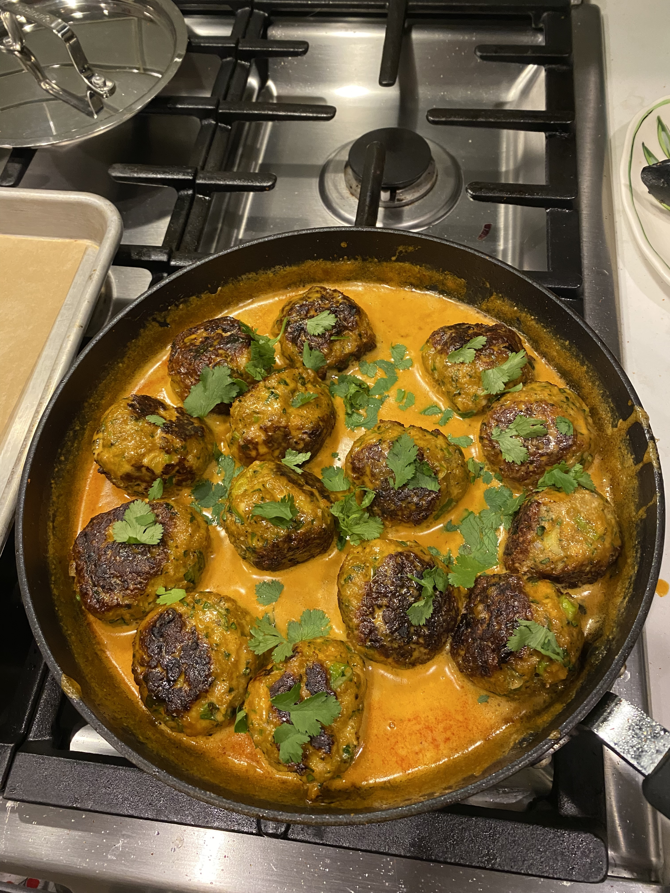
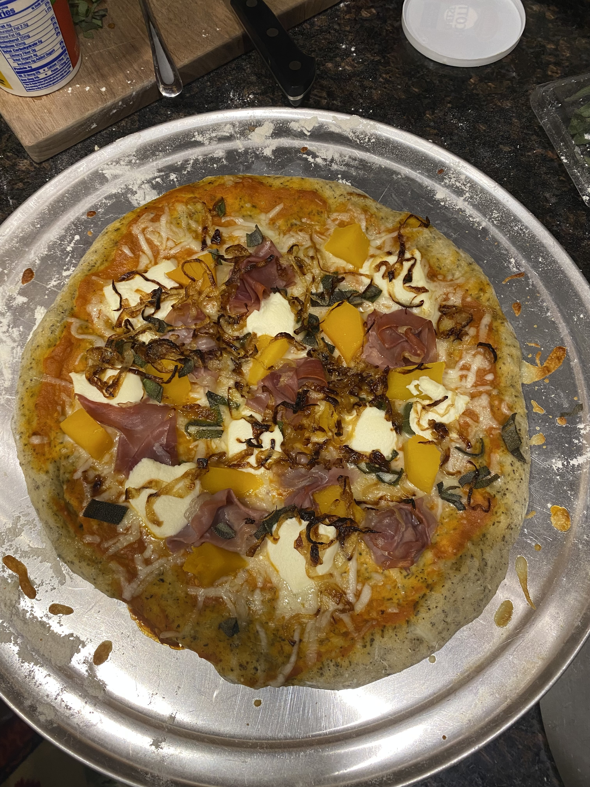
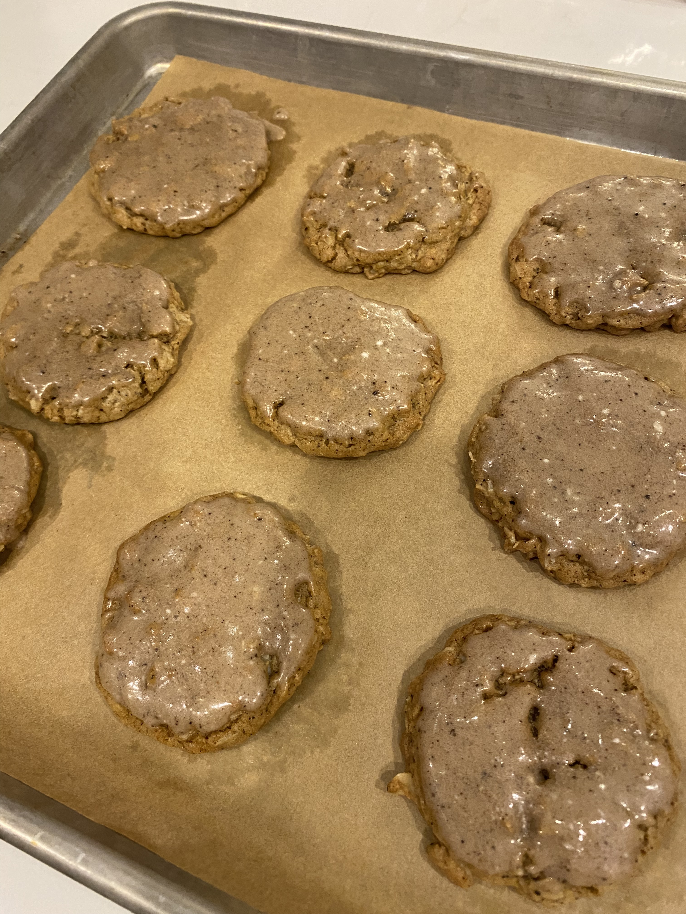

| Home | Thai Meatballs | Autumnal Pizza | Brown Butter Espresso Cookies |
When fall hits the air, nothing hits the spot like a warm, comforting dish. This website showcases a short selection of recipes perfect for the fall: some use seasonal ingredients, and some are the perfect dish to cook and eat after a busy, chilly day.
|  |  |  |
| Click the picture above to learn more about how to make this thai-inspired meatball dish! | Click the picture above to learn more about how to make this pizza with seasonal, fall flavors! | Click the picture above to learn more about how to make these brown butter espresso cookies! |